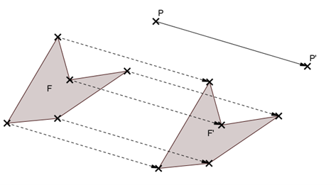

Chapitre 9 : La translation
I. Définitions
Définition : Soient deux points P et P'.
On appelle translation qui transforme P en P', le glissement :
- selon la direction de la droite (PP'),
- dans le sens de P vers P',
- d'une longueur égale à PP'.

Ici, la figure F' est l'image de la figure F par cette translation.
Remarque : Pour schématiser la translation, on peut tracer une flèche allant de P vers P'. Cette flèche s'appelle un vecteur et on peut noter PP'.
Vocabulaire : On dit alors que F' est l'image de F par la translation de vecteur PP'.
II. Construction
1) Avec un quadrillage
Énoncé : Construire l'image de ABCD par la translation de vecteur PP'.
Méthode :
Pour aller de P à P', on descend de 3 carreaux et on va de 6 carreaux vers la gauche.
On applique donc ce mouvement à A, B, C et D.
2) Sur feuille blanche
a) Construction avec équerre, règle et compas
Énoncé : Construire l'image du point M par la translation de vecteur AB.
Méthode avec équerre, règle et compas :
1. On pose l'équerre avec un côté de l'angle droit sur la droite (AB)
2. On pose la règle le long de l'autre côté de l'angle droit (perpendiculaire à AB)
3. On fait glisser l'équerre le long de la règle jusqu'à ce que le côté passe par M
4. On trace la parallèle à (AB) le long de ce côté
5. Avec le compas, on prend l'écartement AB
6. On reporte cet écartement à partir du point M sur la parallèle
7. Le point d'intersection de l'arc et de la parallèle est le point M'
8. On recommence pour chaque point de la figure
b) Construction au compas seulement
Énoncé : Construire l'image du point M par la translation de vecteur AB (uniquement au compas).
Méthode avec le compas uniquement :
1. Avec le compas, on prend l'écartement AM
2. On reporte cet écartement à partir du point B
3. Avec le compas, on prend l'écartement AB
4. On reporte cet écartement à partir du point M
5. Le point d'intersection des deux arcs de cercle est le point M'
6. On recommence pour chaque point de la figure
Remarque : Le quadrilatère ABM'M est un parallélogramme.
III. Propriétés
Propriété : La translation conserve :
- l'alignement (donc le parallélisme et la perpendicularité)
- les longueurs
- les angles
- les aires.
Remarque : La translation transforme donc :
- un segment en un segment de même longueur,
- une droite en une droite parallèle,
- un angle en un angle de même mesure,
- un cercle en un cercle de même rayon,
- une figure en une figure de même aire.
Exemple : Si ABC est un triangle rectangle en A tel que AB = 5 cm et ABC = 40°, alors l'image A'B'C' de ABC par une translation est également un triangle rectangle en A' tel que A'B' = 5 cm et A'B'C' = 40°.